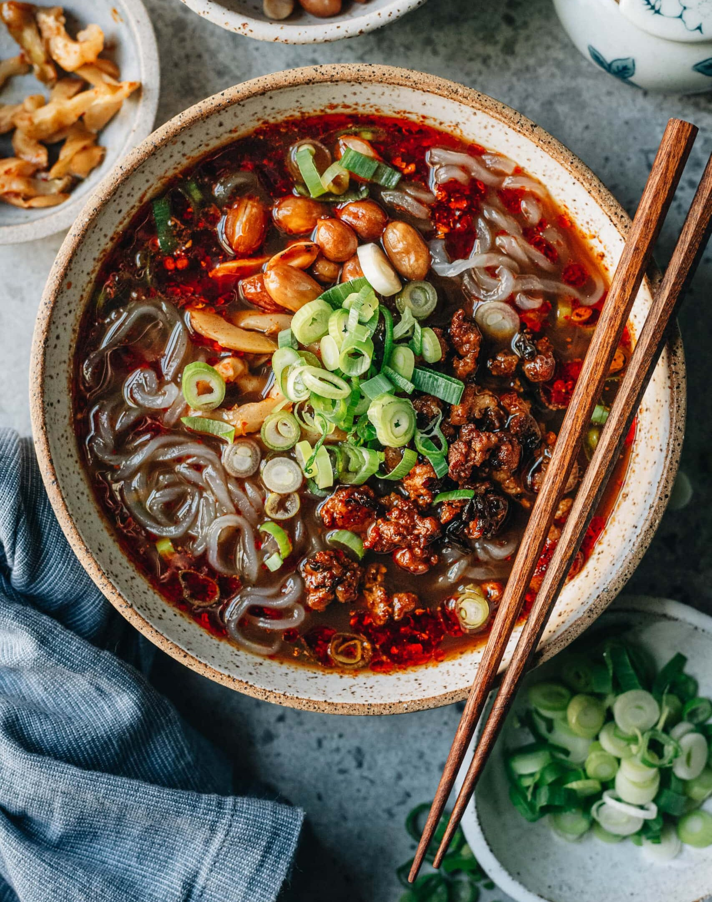

SUAN LA FEN (Hot and Sour Vermicelli)

Description
Suan La Fen or Hot and Sour Vermicelli, is noodle soup that originates from the Sichuan province of China.
Its flavor is composed of the sourness of rice vinegar, the hotness of spice-filled chili oil, and the meaty taste of broth that uses beef, pork, chicken, vegetables, or just plain water.
Perpeation of dish is very easy as long as you have chili oil and broth, but still it is not difficult to make broth and chili oil.
Ingerdients
- Broth that you like
- Chinese chili oil
- Soy sauce
- Black vineger
- Sweet potato noodles
- Ground Sichuan pepper
- Minced garlic
Steps
- Add soy sauce, chinese chili oil, black vinegar, ground sichuan pepper and minced garlic into a bowl
- Boil meat broth or mushrooms or vegetables that you like
- Boil sweet potato noodles
- Add sweet potato noodles into the bowl
- For the final step add boiled broth into the bowl and serve